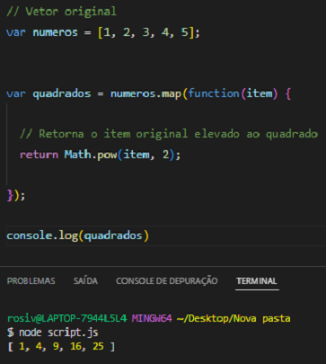
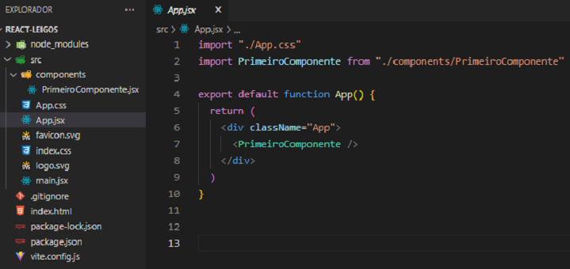
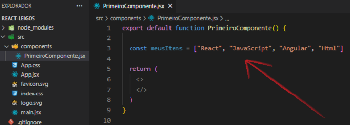
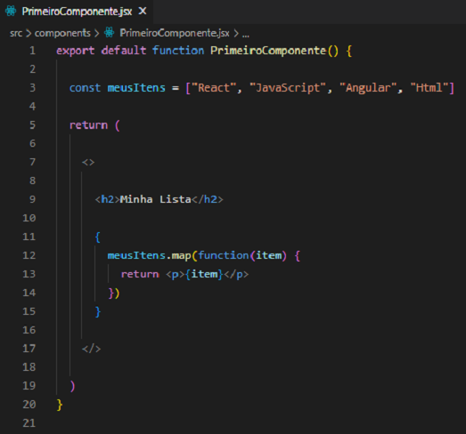
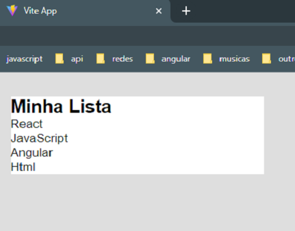
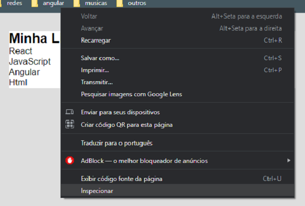
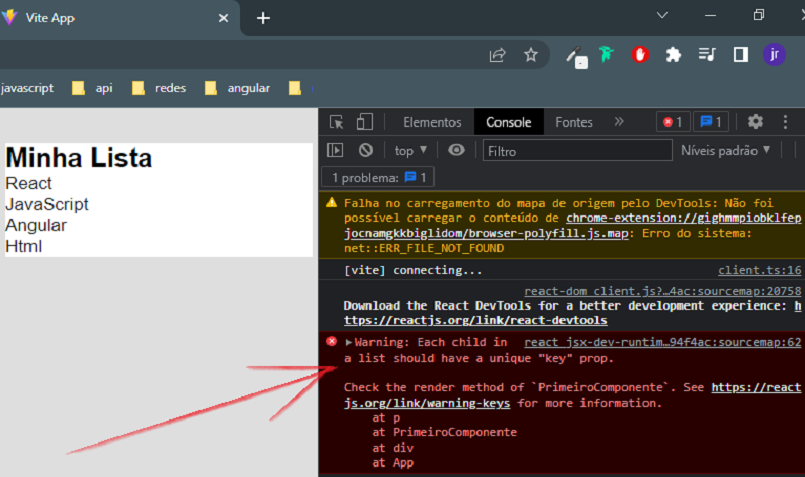
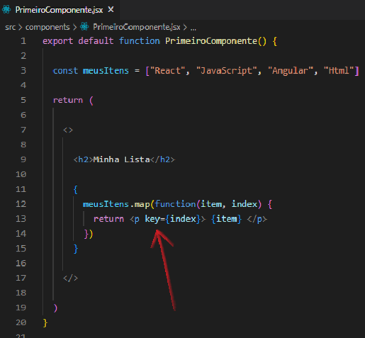

Para renderizar uma lista vamos precisar de um array e do método map( ) para percorrer cada elemento da lista. Pode ser um array de número, de strings ou de objetos.
Primeiramente iremos revisar o método map( ). Podemos percorrer um array com valores numéricos e obter um novo array contendo o quadrado de cada item original. O método map() é invocado a partir de um array e recebe como parâmetro uma função de callback, que é invocada para cada item e retorna o valor do item equivalente no array resultante.

Para compreender melhor o método map( ), deixaremos aqui um vídeo explicativo:
Vamos lá !
O nosso projeto está com apenas um componente. O arquivo App.jsx está da seguinte forma:

Dentro do componente PrimeiroComponente.jsx iremos criar uma lista antes do return.

Lembre-se que a linguagem JavaScript é executada apenas dentro das chaves. No método map( ), para cada elemento do vetor esse mesmo elemento será impresso dentro de um parágrafo.

No navegador teremos:

Por padrão esse método no React pede a inclusão de uma propriedade. Podemos ver o aviso através do console clicando com o botão direito do mouse e selecionando Inspecionar.


Devemos incluir a propriedade key.
